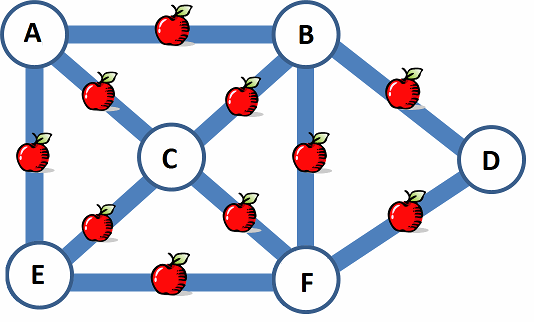

りんごを収穫（しゅうかく）する季節になりました。ビ太郎は農園でそれぞれの道を1回だけ歩いてりんごを集めることにしました。道はとちゅうで引き返すことはできません。

ビ太郎はどこから歩き始めれば，りんごを全部拾えるでしょう？正解は「Ａから始める」
一般的には一筆書きとして知られている問題です。
一筆書きは情報科学では，グラフ理論によって説明できます。情報科学でのグラフとは，線と点で表わされた図を意味します。
今，点と線の関係を考えると，始点と終点では一つの点から線が1本繋がっている必要があります（始点と終点が同じ場合は点に繋がる線は2本となります）。また，それ以外の点（通過する点）では，一つの点につき，入って行く線と出て行く線の２本（又は２の倍数本）が必要となります。
「これをまとめると，一筆書きできる条件は，
１）始点と終点が異なる場合は，始点と終点と繋がる線はそれぞれ奇数本であり，それ以外の全ての点と繋がる線は偶数本となる。
２）始点と終点が同じ場合は、全ての点と繋がる線は偶数本である。
こととなります。」
今回の問題ではＡの点とＥの点は３本の線（道）が繋がっており，Ｄが２本，それ以外の点は４本となっています。従って，始点はＡかＥということになりますが，選択肢にはＡしかありませんので，「Ａから始める」が正解となります。